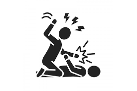
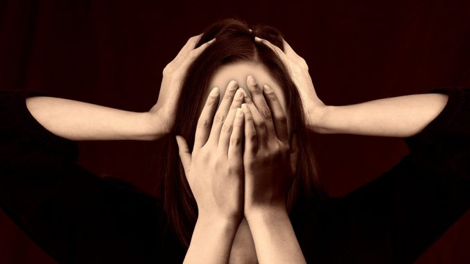
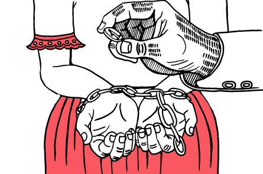
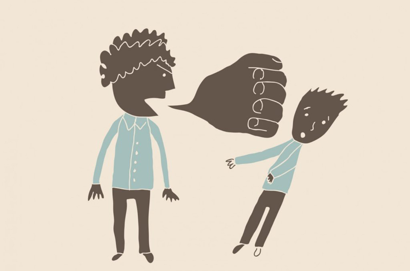

COMUNICATE EN CASO
DE VIOLENCIA 144
Por violencia se entiende una forma de interacción que ocasiona o amenaza con ocasionar daño de algún tipo al otro, ya sea mediante el sometimiento, la humillación, el daño físico o psicológico. Existen diversos tipos de violencia.
Es la forma de violencia que atañe al cuerpo y a la fuerza física: el castigo corporal, capaz de ocasionar dolor o incluso la muerte, así como sentimientos traumáticos y de humillación.
Es un tipo de violencia que se ejerce sin la intervención de acciones físicas, pero que afecta a la víctima no solo a nivel psicológico y emocional, sino también físico.
Es cuando una persona controla completamente el dinero y demás recursos económicos de la otra persona. Esto se hace con el objetivo de que la víctima se vuelva dependiente financieramente
Es aquella en la que se busca dañar a través de un mensaje o un discurso. Puede contener insultos para producir malestar psicológico. Esto puede producir ansiedad y busca dañar la autoestima y la imagen de la otra persona
Hablar las cosas: No dejes que los problemas se acumulen o se resuelvan con gritos o violencia. Lo mejor es charlar con respeto, sin insultos ni amenazas.
Escuchar sin juzgar: Si alguien te cuenta que está en una relación tóxica o violenta, no la juzgues. Apoyá y ayudá a esa persona a buscar una salida.
Poné límites claros: No toleres actitudes violentas, manipulaciones o control. Decí "no" desde el primer momento y no cedas a presiones.
Educación desde chicos: Enseñá en casa y en la escuela que todos somos iguales, que el respeto es clave y que la violencia no es una opción.
Pedí ayuda a tiempo: Si ves que una situación se pone pesada o peligrosa, no dudes en buscar ayuda. Contactá a organizaciones, amigos, o líneas de apoyo antes de que sea tarde.
No te calles: Si sos testigo de una situación violenta, intervení de forma segura o buscá a alguien que pueda hacerlo. El silencio solo ayuda al agresor